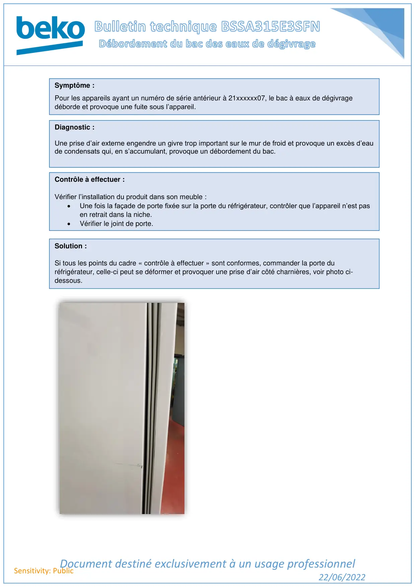

Bac de dégivrage BSSA déborde

Document destiné exclusivement à un usage professionnel22/06/2022Sensitivity: PublicSymptôme :Pour les appareils ayant un numéro de série antérieur à 21xxxxxx07, le bac à eaux de dégivragedéborde et provoque une fuite sous l’appareil.Diagnostic :Une prise d’air externe engendre un givre trop important sur le mur de froid et provoque un excès d’eaude condensats qui, en s’accumulant, provoque un débordement du bac.Contrôle à effectuer :Vérifier l’installation du produit dans son meuble :•Une fois la façade de porte fixée sur la porte du réfrigérateur, contrôler que l’appareil n’est pasen retrait dans la niche.•Vérifier le joint de porte.Solution :Si tous les points du cadre « contrôle à effectuer » sont conformes, commander la porte duréfrigérateur, celle-ci peut se déformer et provoquer une prise d’air côté charnières, voir photo ci-dessous.
1 / 1